토목산업기사 (2019-04-27 기출문제)
1과목: 응용역학
1. 그림과 같은 단순보에 모멘트 하중 M1과 M2가 작용할 경우 C점의 휨모멘트를 구하는 식은? (단, M1 ＞ M2)
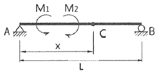
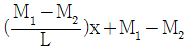
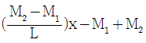
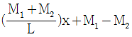
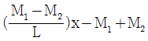
(정답률: 59%)

2. 그림과 같이 50kN의 힘을 왼쪽으로 10m, 오른쪽으로 15m 떨어진 두 지점에 나란히 분배하였을 때 두 힘 P1, P2 의 값으로 옳은 것은?
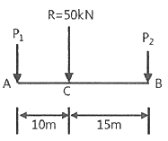
- P1 = 10 kN, P2 = 40 kN
- P1 = 20 kN, P2 = 30 kN
- P1 = 30 kN, P2 = 20 kN
- P1 = 40 kN, P2 = 10 kN
(정답률: 72%)
3. 그림과 같은 단면을 갖는 보에서 중립축에 대한 휨(bending)에 가장 강한 형상은? (단, 모두 동일한 재료이며 단면적이 같다.)
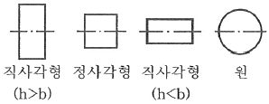
- 직사각형(h ＞ b)
- 정사각형
- 직사각형(h ＜ b)
- 원
(정답률: 70%)
4. 보의 단면이 그림과 같고 지간이 같은 단순보에서 중앙에 집중하중 P가 작용할 경우에 처짐 y1은 y2의 몇 배 인가? (단, 동일한 재료이며 단면치수만 다르다.)
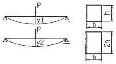
- 2배
- 4배
- 8배
- 16배
(정답률: 62%)
5. 그림과 같은 장주의 강도를 옳게 관계시킨 것은? (단, 동질의 동단면으로 한다.)
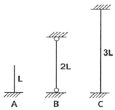
- A ＞ B ＞ C
- A ＞ B = C
- A = B = C
- A = B ＜ C
(정답률: 75%)
6. 그림에서 AB, BC 부재의 내력은?
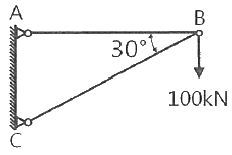
- AB 부재 : 인장 100√3 kN, BC 부재 : 압축 200 kN
- AB 부재 : 인장 100 kN, BC 부재 : 인장 100 kN
- AB 부재 : 인장 100 kN, BC 부재 : 압축 100 kN
- AB 부재 : 압축 100√2 kN, BC 부재 : 인장 100√2 kN
(정답률: 77%)
7. 다음 그림과 같은 트러스에서 D 부재에 일어나는 부재내력은?
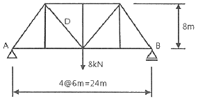
- 10 kN
- 8 kN
- 6 kN
- 5 kN
(정답률: 48%)
8. 그림과 같은 힘의 O점에 대한 모멘트는?
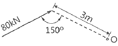
- 240 kN·m
- 120 kN·m
- 80 kN·m
- 60 kN·m
(정답률: 72%)
9. 그림에 표시한 것은 단순보에 대한 전단력도이다. 이 보의 C점에 발생하는 휨모멘트는? (단, 단순보에는 회전모멘트 하중이 작용하지 않는다.)
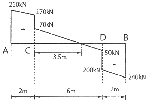
- +420 kN·m
- +380 kN·m
- +210 kN·m
- +100 kN·m
(정답률: 66%)
10. 길이 10m, 단면 30cm × 40cm 의 단순보가 중앙에 120 kN의 집중하중을 받고 있다. 이 보의 최대 휨응력은? (단, 보의 자중은 무시한다.)
- 55 MPa
- 52.5 MPa
- 45 MPa
- 37.5 MPa
(정답률: 55%)
11. 지름 1cm 인 강철봉에 80kN 의 물체를 매달 때 강철봉의 길이 변화량은? (단, 강철봉의 길이는 1.5m이고, 탄성계수 E = 2.1 × 105 MPa 이다.)
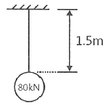
- 7.3 mm
- 8.5 mm
- 9.7 mm
- 10.9 mm
(정답률: 68%)
12. 그림과 같이 a × 2a 의 단면을 갖는 기둥에 편심거리 a/2 만큼 떨어져서 P가 작용할 때 기둥에 발생할 수 있는 최대 압축응력은? (단, 기둥은 단주이다.)
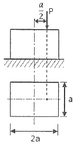
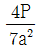
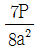
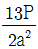
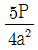
(정답률: 61%)
13. 그림과 같이 등분포하중을 받는 단순보에서 C점과 B점의 휨모멘트비(
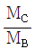
)는?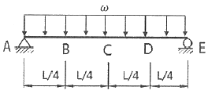
- 4/3
- 3/2
- 2
- 5/2
(정답률: 57%)
14. 그림과 같은 도형(빗금친 부분)의 X축에 대한 단면 1차 모멘트는?
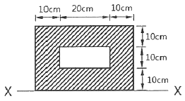
- 5000 cm3
- 10000 cm3
- 15000 cm3
- 20000 cm3
(정답률: 73%)
15. 그림과 같이 D점에 하중 P를 작용하였을 때, C점에 ΔC=0.2cm의 처짐이 발생하였다. 만약 D점의 P를 C점에 작용시켰을 경우 D점에 생기는 처짐 ΔD의 값은?
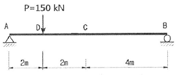
- 0.1 cm
- 0.2 cm
- 0.4 cm
- 0.6 cm
(정답률: 66%)
16. 단면적 A=20cm2, 길이 L=0.5m 인 강봉에 인장력 P=80kN을 가하였더니 길이가 0.1mm 늘어났다. 이 강봉의 푸아송 수 m=3 이라면 전단탄성계수 G는 얼마인가?
- 75000 MPa
- 7500 MPa
- 25000 MPa
- 2500 MPa
(정답률: 53%)
17. 그림과 같은 단순보에서 최대 휨응력은?
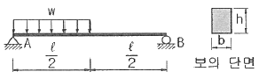
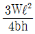
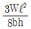
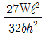
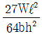
(정답률: 53%)
18. 그림과 같은 아치에서 AB부재가 받는 힘은?
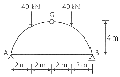
- 0
- 20 kN
- 40 kN
- 80 kN
(정답률: 48%)
19. 그림과 같은 1/4 원에서 x축에 대한 단면 1차 모멘트의 크기는?
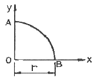
- r3 / 2
- r3 / 3
- r3 / 4
- r3 / 5
(정답률: 57%)
20. 원형 단면인 보에서 최대 전단응력은 평균 전단응력의 몇 배인가?
- 1/2
- 3/2
- 4/3
- 5/3
(정답률: 74%)
2과목: 측량학
21. 캔트(cant) 계산에서 속도 및 반지름을 모두 2배로 하면 캔트는?
- 1/2 로 감소한다.
- 2배로 증가한다.
- 4배로 증가한다.
- 8배로 증가한다.
(정답률: 75%)
22. 도로 선형계획시 교각이 25°, 반지름 300m인 원곡선과 교각 20° , 반지름 400m인 원곡선의 외선 길이(E)의 차이는?
- 6.284 m
- 7.284 m
- 2.113 m
- 1.113 m
(정답률: 56%)
23. 두 점간의 고저차를 레벨에 의하여 직접 관측할 때 정확도를 향상시키는 방법이 아닌 것은?
- 표척을 수직으로 유지한다.
- 전시와 후시의 거리를 같게 한다.
- 시준거리를 짧게 하여 레벨의 설치 횟수를 늘린다.
- 기계가 침하되거나 교통에 방해가 되지 않는 견고한 지반을 택한다.
(정답률: 70%)
24. 두 변이 각각 82m와 73m이며, 그 사이에 낀 각이 67° 인 삼각형의 면적은?
- 1169 m2
- 2339 m2
- 2755 m2
- 5510 m2
(정답률: 54%)
25. 반지름 150m의 단곡선을 설치하기 위하여 교각을 측정한 값이 57° 36′ 일 때 접선장과 곡선장은?
- 접선장=82.46m, 곡선장=150.80m
- 접선장=82.46m, 곡선장=75.40m
- 접선장=236.36m, 곡선장=75.40m
- 접선장=236.36m, 곡선장=150.80m
(정답률: 66%)
26. 다각측량에서는 측각의 정도와 거리의 정도가 균형을 이루어야 한다. 거리 100m에 대한 오차가 ±2mm 일 때 이에 균형을 이루기 위한 측각의 최대 오차는?
- ±1″
- ±4″
- ±8″
- ±10″
(정답률: 64%)
27. GNSS 관측오차 중 주변의 구조물에 위성 신호가 반사되어 수신되는 오차를 무엇이라고 하는가?
- 다중경로 오차
- 사이클슬립 오차
- 수신기시계 오차
- 대류권 오차
(정답률: 70%)
28. 축척 1:5000의 지형도에서 두 점 A, B간의 도상거리가 24mm이었다. A점의 표고가 115m, B점의 표고가 145m이며, 두 점간은 등경사라 할 때 120m 등고선이 통과하는 지점과 A점간의 지상 수평거리는?
- 5 m
- 20 m
- 60 m
- 100 m
(정답률: 62%)
29. 측지학을 물리학적 측지학과 기하학적 측지학으로 구분할 때, 물리학적 측지학에 속하는 것은?
- 면적의 산정
- 체적의 산정
- 수평위치의 산정
- 지자기 측정
(정답률: 71%)
30. 지구의 반지름이 6370 km이며 삼각형의 구과량이 20″ 일 때 구면삼각형의 면적은?
- 1934 km2
- 2934 km2
- 3934 km2
- 4934 km2
(정답률: 49%)
31. 노선측량의 완화곡선에 대한 설명 중 옳지 않은 것은?
- 완화곡선의 접선은 시점에서 원호에, 종점에서 직선에 접한다.
- 완화곡선의 반지름은 시점에서 무한대, 종점에서 원곡선의 반지름(R)으로 된다.
- 클로소이드의 조합형식에는 S형, 복합형, 기본형 등이 있다.
- 모든 클로소이드는 닮은꼴이며, 클로소이드 요소는 길이의 단위를 가진 것과 단위가 없는 것이 있다.
(정답률: 62%)
32. 하천측량의 고저측량에 해당되지 않는 것은?
- 종단측량
- 유량관측
- 횡단측량
- 심천측량
(정답률: 63%)
33. 지형도 상의 등고선에 대한 설명으로 틀린 것은?
- 등고선의 간격이 일정하면 경사가 일정한 지면을 의미한다.
- 높이가 다른 두 등고선은 절벽이나 동굴의 지형에서 교차하거나 만날 수 있다.
- 지표면의 최대경사의 방향은 등고선에 수직한 방향이다.
- 등고선은 어느 경우라도 도면 내에서 항상 폐합된다.
(정답률: 55%)
34. 삼각측량시 삼각망 조정의 세가지 조건이 아닌 것은?
- 각조건
- 변조건
- 측점조건
- 구과량조건
(정답률: 70%)
35. 삼각형 면적을 계산하기 위해 변길이를 관측한 결과, 그림과 같을 때 이 삼각형의 면적은?
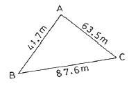
- 1072.7 m2
- 1235.6 m2
- 1357.9 m2
- 1435.6 m2
(정답률: 65%)
36. 다각측량의 특징에 대한 설명으로 옳지 않은 것은?
- 삼각측량에 비하여 복잡한 시가지나 지형의 기복이 심해 시준이 어려운 지역의 측량에 적합하다.
- 도로, 수로, 철도와 같이 폭이 좁고 긴 지역의 측량에 편리하다.
- 국가평면기준점 결정에 이용되는 측량방법이다.
- 거리와 각을 관측하여 측점의 위치를 결정하는 측량이다.
(정답률: 57%)
37. 항공사진측량에서 관측되는 지형지물의 투영원리로 옳은 것은?
- 정사투영
- 평행투영
- 등적투영
- 중심투영
(정답률: 57%)
38. 어떤 노선을 수준측량한 결과가 표와 같을 때, 측점 1, 2, 3, 4의 지반고 값으로 틀린 것은? (단위 : m)
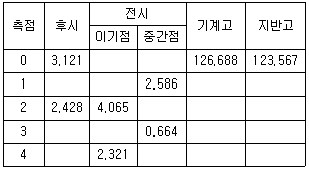
- 측점 1 : 124.102 m
- 측점 2 : 122.623 m
- 측점 3 : 124.374 m
- 측점 4 : 122.730 m
(정답률: 70%)
39. C점의 표고를 구하기 위해 A코스에서 관측한 표고가 83.324m, B코스에서 관측한 표고가 83.341m였다면 C점의 표고는?
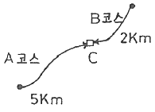
- 83.341m
- 83.336m
- 83.333m
- 83.324m
(정답률: 65%)
40. A점에서 출발하여 다시 A점으로 되돌아오는 다각측량을 실시하여 위거오차 20cm, 경거오차 30cm가 발생하였고, 전 측선 길이가 800m라면 다각측량의 정밀도는?
- 1/1000
- 1/1730
- 1/2220
- 1/2630
(정답률: 59%)
3과목: 수리학
41. 액체표면에서 150cm 깊이의 점에서 압력강도가 14.25 kN/m2 이면 이 액체의 단위중량은?
- 9.5 kN/m3
- 10 kN/m3
- 12 kN/m3
- 16 kN/m3
(정답률: 57%)
42. 개수로에서 발생되는 흐름 중 상류와 사류를 구분하는 기준이 되는 것은?
- Mach 수
- Froude 수
- Manning 수
- Reynolds 수
(정답률: 71%)
43. 밀도의 차원을 공학단위[FLT]로 올바르게 표시한 것은?
- [FL-3]
- [FL4T2]
- [FL4T-2]
- [FL-4T2]
(정답률: 49%)
44. 그림과 같은 단선관수로에서 200m 떨어진 곳에 내경 20cm 관으로 0.0628 m3 의 물을 송수하려고 한다. 두 저수지의 수면차(H)를 얼마로 유지하여야 하는가? (단, 마찰손실계수 f = 0.035, 급확대에 의한 손실계수 fse = 1.0, 급축소에 의한손실계수 fsc = 0.5 이다.)
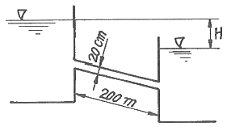
- 6.45m
- 5.45m
- 7.45m
- 8.27m
(정답률: 44%)
45. 그림과 같은 피토관에서 A점의 유속을 구하는 식으로 옳은 것은?
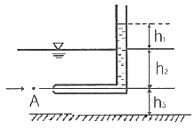
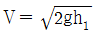
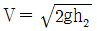
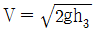
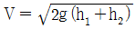
(정답률: 62%)
46. 유체의 기본성질에 대한 설명으로 틀린 것은?
- 압축률과 체적탄성계수는 비례관계에 있다.
- 압력변화량과 체적변화율의 비를 체적탄성계수라 한다.
- 액체와 기체의 경계면에 작용하는 분자인력을 표면장력이라 한다.
- 액체 내부에서 유체분자가 상대적인 운동을 할 때 이에 저항하는 전단력이 작용하는 데, 이 성질을 점성이라 한다.
(정답률: 49%)
47. 양정이 6m일 때 4.2마력의 펌프로 0.03 m3/s 를 양수했다면 이 펌프의 효율은?
- 42%
- 57%
- 72%
- 90%
(정답률: 45%)
48. 그림에서 단면 ①, ②에서의 단면적, 평균유속, 압력강도를 각각 A1, V1, P1, A2, V2, P2 라 하고, 물의 단위 중량을 w0 라 할 때, 다음 중 옳지 않은 것은? (단, Z1 = Z2 이다.)
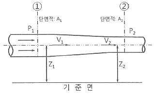
- V1 ＜ V2
- P1 ＞ P2
- A1 · V1 = A2 · V2
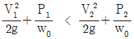
(정답률: 55%)
49. 정상적인 흐름 내의 1개의 유선상에서 각 단면의 위치수두와 압력수두를 합한 수두를 연결한 선은?
- 총 수두(Total Head)
- 에너지선(Energy Line)
- 유압 곡선(Pressure Curve)
- 동수경사선(Hydraulic Grade Line)
(정답률: 64%)
50. Darcy-Weisbach의 마찰손실수두 공식에 관한 내용으로 틀린 것은?
- 관의 조도에 비례한다.
- 관의 직경에 비례한다.
- 관로의 길이에 비례한다.
- 유속의 제곱에 비례한다.
(정답률: 61%)
51. 완전유체일 때 에너지선과 기준수평관의 관계는?
- 서로 평행하다.
- 압력에 따라 변한다.
- 위치에 따라 변한다.
- 흐름에 따라 변한다.
(정답률: 65%)
52. 그림과 같은 용기에 물을 넣고 연직하향방향으로 가속도 α를 중력가속도만큼 작용했을 때 용기 내의 물에 작용하는 압력 P는?
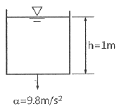
- 0
- 1 t/m2
- 2 t/m2
- 3 t/m2
(정답률: 54%)
53. 내경이 300 mm이고 두께가 5mm인 강관이 견딜 수 있는 최대 압력수두는? (단, 강관의 허용인장응력은 1500 kg/cm2 이다.)
- 300 m
- 400 m
- 500 m
- 600 m
(정답률: 54%)
54. 지하수의 유량을 구하는 Darcy의 법칙으로 옳은 것은? (단, Q = 유량, k = 투수계수, I = 동수경사, A = 투과단면적, C = 유출계수)
- Q = C I A
- Q = k I A
- Q = C2 I A
- Q = k2 I A
(정답률: 70%)
55. 지름 20 cm인, 원형 오리피스로 0.1 m3/s 의 유량을 유출시키려 할 때 필요한 수심은? (단, 수심은 오리피스 중심으로부터 수면까지의 높이 이며, 유량계수 c = 0.6)
- 1.24 m
- 1.44 m
- 1.56 m
- 2.00 m
(정답률: 50%)
56. 아래 표의 ( )안에 들어갈 알맞은 용어를 순서대로 짝지어진 것은?
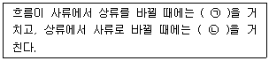
- ㉠ : 도수현상, ㉡ : 대응수심
- ㉠ : 대응수심, ㉡ : 공액수심
- ㉠ : 도수현상, ㉡ : 지배단면
- ㉠ : 지배단면, ㉡ : 공액수심
(정답률: 64%)
57. 그림과 같은 불투수층에 도달하는 집수암거의 집수량은? (단, 투수계수는 k, 암거의 길이는 ℓ이며, 양쪽 측면에서 유입됨)
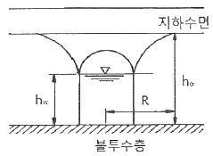
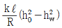
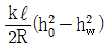
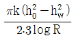
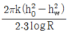
(정답률: 50%)
58. 그림과 같은 역사이폰의 A, B, C, D점에서 압력수두를 각각 PA, PB, PC, PD 라 할 때 다음 사항 중 옳지 않은 것은? (단, 점선은 동수경사선으로 가정한다.)
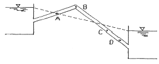
- PB ＜ 0
- PC ＞ PD
- PC ＞ 0
- PA = 0
(정답률: 64%)
59. 수면으로부터 3m 깊이에 한 변의 길이가 1m이고 유량계수가 0.62인 정사각형 오리피스가 설치되어 있다. 현재의 오리피스를 유량계수가 0.60이고 지름 1m인 원형 오리피스로 교체한다면, 같은 유량이 유출되기 위하여 수면을 어느 정도로 유지하여야 하는가?
- 현재의 수면과 똑같은 유지하여야 한다.
- 현재의 수면보다 1.2m 낮게 유지하여야 한다.
- 현재의 수면보다 1.2m 높게 유지하여야 한다.
- 현재의 수면보다 2.2m 높게 유지하여야 한다.
(정답률: 52%)
60. 유량 1.5m3/s, 낙차 100m인 지점에서 발전할 때 이론수력은?
- 1470 kW
- 1995 kW
- 2000 kW
- 2470 kW
(정답률: 44%)
4과목: 철근콘크리트 및 강구조
61. 보 또는 1방향슬래브는 휨균열을 제어하기 위하여 콘크리트 인장연단에 가장 가까이 배치되는 철근의 중심 간격 s를 제한하고 있다. 철근의 응력(fs)이 210MPa이며, 휨철근의 표면과 콘크리트 표면 사이의 최소두께(cc)가 40mm로 설계된 휨철근의 중심 간격 s는 얼마 이하여야 하는가? (단, 건조환경에 노출되는 경우는 제외한다.)
- 275 mm
- 300 mm
- 325 mm
- 350 mm
(정답률: 36%)
62. fy=350 MPa, d=500mm 인 단철근 직사각형 균형보가 있다. 강도설계법에 의해 보의 압축연단에서 중립축까지의 거리는?
- 258 mm
- 291 mm
- 316 mm
- 332 mm
(정답률: 57%)
63. 그림과 같이 단순 지지된 2방향 슬래브에 집중 하중 P가 작용할 때, ab 방향에 분배되는 하중은 얼마인가?
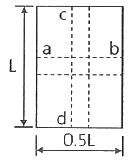
- 0.⑤9P
- 0.111P
- 0.667P
- 0.889P
(정답률: 42%)
64. 폭이 400 mm, 유효깊이가 600 mm인 직사각형보에서 콘크리트가 부담할 수 있는 전단강도 Vc는 얼마인가? (단, 보통중량 콘크리트이며 fck는 24 MPa임)
- 196kN
- 248kN
- 326kN
- 392kN
(정답률: 56%)
65. 그림과 같은 판형(Plate Girder)의 각부 명칭으로 틀린 것은?
- A - 상부판(Flange)
- B - 보강재(Stiffener)
- C - 덮개판(Cover plate)
- D - 횡구(Bracing)
(정답률: 70%)
66. 강도설게법에 의해 콘크리트 구조물을 설계할 때 안전을 위해 사용하는 강도감소계수 ø의 값으로 옳지 않은 것은?
- 인장지배단면 : 0.85
- 포스트텐션 정창구역 : 0.85
- 압축지배단면으로서 나선철근으로 보강된 철근콘크리트 부재 : 0.65
- 전단력과 비틀림모멘트를 받는 부재 : 0.75
(정답률: 68%)
67. 그림과 같은 띠철근 기둥의 공칭축강도(Pn)는 얼마인가? (단, fck=24MPa, fy=300MPa, 종방향 철근의 전체 단면적 Ast=2027mm2 이다.)
- 2145.7 kN
- 2279.2 kN
- 3064.6 kN
- 3492.2 kN
(정답률: 51%)
68. 콘크리트의 크리프에 영향을 미치는 요인들에 대한 설명으로 틀린 것은?
- 물-시멘트비가 클수록 크리프가 크게 일어난다.
- 단위 시멘트량이 많을수록 크리프가 증가한다.
- 습도가 높을수록 크리프가 증가한다.
- 온도가 높을수록 크리프가 증가한다.
(정답률: 52%)
69. 그림과 같은 L형강에서 단면의 순단면을 구하기 위하여 전개한 총폭(bg)은 얼마인가?
- 250 mm
- 264 mm
- 288 mm
- 300 mm
(정답률: 50%)
70. 강도설계법에서 그림과 같은 T형보의 사선 친 플랜지 단면에 작용하는 압축력과 균형을 이루는 가상 압축철근의 단면적은 얼마인가? (단, fck=21MPa, fy=380MPa 임)
- 2011 mm2
- 2349 mm2
- 3525 mm2
- 4021 mm2
(정답률: 35%)
71. 흙에 접하거나 옥외의 공기에 직접 노출되는 현장치기 콘크리트로 D25 이하 철근을 사용하는 경우 최소피복두께는 얼마인가?
- 20 mm
- 40 mm
- 50 mm
- 60 mm
(정답률: 52%)
72. PSC의 해석의 기본개념 중 아래의 보기에서 설명하는 개념은?
- 균등질 보의 개념
- 내력 모멘트의 개념
- 하중평형의 개념
- 변형률의 개념
(정답률: 60%)
73. PS 콘크리트에서 강선에 긴장을 할 때 긴장재의 허용응력은 얼마 이하여야 하는가? (단, 긴장재의 설계기준인장강도(fpu)=1900 MPa, 긴장재의 설계기준항복강도(fpy)=1600 MPa)
- 1440 MPa
- 1504 MPa
- 1520 MPa
- 1580 MPa
(정답률: 41%)
74. 철근 콘크리트의 특징에 대한 설명으로 옳지 않은 것은?
- 내구성, 내화성이 크다.
- 형상이나 치수에 제한을 받지 않는다.
- 보수나 개조가 용이하다.
- 유지 관리비가 적게 든다.
(정답률: 69%)
75. 강도설계법에서 보에 대한 등가깊이 a에 대하여 α=β1c 인데 fck가 45 MPa일 경우 β1의 값은?
- 0.85
- 0.731
- 0.653
- 0.631
(정답률: 70%)
76. bw=300mm, d=400mm, As=2400mm2, As′=1200mm2 인 복철근 직사각형 단면의 보에서 하중이 작용할 경우 탄성 처짐량이 1.5mm이었다. 5년 후 총 처짐량은 얼마인가?
- 2.0 mm
- 2.5 mm
- 3.0 mm
- 3.5 mm
(정답률: 48%)
77. 프리스트레스 손실 원인 중 프리스트레스를 도입할 때 즉시 손실의 원인이 되는 것은?
- 콘크리트 건조수축
- PS 강재의 릴랙세이션
- 콘크리트 크리프
- 정착장치의 활동
(정답률: 58%)
78. 다음 그림에서 인장력 P=400kN 이 작용할 때 용접이음부의 응력은 얼마인가?
- 96.2 MPa
- 101.2 MPa
- 1⑤.3 MPa
- 108.6 MPa
(정답률: 60%)
79. 휨 부재 단면에서 인장철근에 대한 최소 철근량을 규정한 이유로 가장 옳은 것은?
- 부재의 취성파괴를 유도하기 위하여
- 사용 철근량을 줄이기 위하여
- 콘크리트 단면을 최소화하기 위하여
- 부재의 급작스런 파괴를 방지하기 위하여
(정답률: 63%)
80. 철근콘크리트 구조물의 전단철근 상세에 대한 설명으로 틀린 것은?
- 스터럽의 간격은 어떠한 경우이든 400mm 이하로 하여야 한다.
- 주인장철근에 45도 이상의 각도로 설치되는 스터럽은 전단철근으로 사용할 수 있다.
- 전단철근의 설계기준항복강도는 500MPa을 초과할 수 없다.
- 전단철근으로 사용하는 스터럽과 기타 철근 또는 철선은 콘크리트 압축연단부터 거리 d만큼 연장하여야 한다.
(정답률: 45%)
5과목: 토질 및 기초
81. 모래치환에 의한 흙의 밀도 시험 결과 파낸구멍의 부피가 1980 cm3 이었고 이 구멍에서 파낸 흙 무게가 3420g 이었다. 이 흙의 토질시험 결과 함수비가 10%, 비중이 2.7, 최대 건조단위중량이 1.65 g/cm3 이었을 때 이 현장의 다짐도는?
- 약 85%
- 약 87%
- 약 91%
- 약 95%
(정답률: 50%)
82. 어떤 흙의 전단시험 결과 c=1.8kg/cm2, ø=35°, 토립자에 작용하는 수직응력이 σ=3.6kg/cm2 일 때 전단강도는?
- 3.86 kg/cm2
- 4.32 kg/cm2
- 4.89 kg/cm2
- 6.33 kg/cm2
(정답률: 53%)
83. 흙 지반의 투수계수에 영향을 미치는 요소로 옳지 않은 것은?
- 물의 점성
- 유효 입경
- 간극비
- 흙의 비중
(정답률: 64%)
84. 그림에서 모래층에 분사현상이 발생되는 경우는 수두 h가 몇 cm 이상일 때 일어나는가? (단, Gs=2.68, n=60%이다.)
- 20.16 cm
- 18.⑤ cm
- 13.73 cm
- 10.52 cm
(정답률: 51%)
85. 말뚝의 부마찰력에 관한 설명 중 옳지 않은 것은?
- 말뚝이 연약지반을 관통하여 견고한 지반에 박혔을 때 발생한다.
- 지반에 성토나 하중을 가할 때 발생한다.
- 말뚝의 타입 시 항상 발생하며 그 방향은 상향이다.
- 지하수위 저하로 발생한다.
(정답률: 55%)
86. 연약한 점토지반의 전단강도를 구하는 현장 시험방법은?
- 평판재하 시험
- 현장 CBR 시험
- 직접전단 시험
- 현장 베인 시험
(정답률: 58%)
87. 흙의 다짐에 관한 설명 중 옳지 않은 것은?
- 최적 함수비로 다질 때 건조단위중량은 최대가 된다.
- 세립토의 함유율이 증가할수록 최적 함수비는 증대된다.
- 다짐에너지가 클수록 최적 함수비는 커진다.
- 점성토는 조립토에 비하여 다짐곡선의 모양이 완만하다.
(정답률: 59%)
88. 점성토 지반의 개량공법으로 적합하지 않은 것은?
- 샌드 드레인 공법
- 바이브로 플로테이션 공법
- 치환 공법
- 프리로딩 공법
(정답률: 63%)
89. 그림에서 주동토압의 크기를 구한 값은? (단, 흙의 단위중량은 1.8 t/m3 이고 내부마찰각은 30° 이다.)
- 5.6 t/m
- 10.8 t/m
- 15.8 t/m
- 23.6 t/m
(정답률: 54%)
90. 느슨하고 포화된 사질토에 지진이나 폭파, 기타 진동으로 인한 충격을 받았을 때 전단강도가 급격히 감소하는 현상은?
- 액상화 현상
- 분사 현상
- 보일링 현상
- 다일러턴시 현상
(정답률: 61%)
91. 예민비가 큰 점토란 다음 중 어떠한 것을 의미하는가?
- 점토를 교란시켰을 때 수축비가 적은 시료
- 점토를 교란시켰을 때 수축비가 큰 시료
- 점토를 교란시켰을 때 강도가 많이 감소하는 시료
- 점토를 교란시켰을 때 강도가 증가하는 시료
(정답률: 54%)
92. 비중이 2.5인 흙에 있어서 간극비가 0.5이고 포화도가 50%이면 흙의 함수비는 얼마인가?
- 10%
- 25%
- 40%
- 62.5%
(정답률: 50%)
93. 표준관입시험에 관한 설명으로 옳지 않은 것은?
- 시험의 결과로 N치를 얻는다.
- (63.5±0.5)kg 해머를 (76±1)cm 낙하시켜 샘플러를 지반에 30cm 관입시킨다.
- 시험결과로부터 흙의 내부마찰각 등의 공학적 성질을 추정할 수 있다.
- 이 시험은 사질토 보다 점성토에서 더 유리하게 이용된다.
(정답률: 50%)
94. 어떤 유선망에서 상하류면의 수두 차가 4m, 등수두면의 수가 13개, 유로의 수가 7개일 때 단위 폭 1m당 1일 침투수량은 얼마인가? (단, 투수층의 투수계수 K = 2.0 × 10-4cm/s)
- 9.62 × 10-1 m3/day
- 8.0 × 10-1 m3/day
- 3.72 × 10-1 m3/day
- 1.83 × 10-1 m3/day
(정답률: 41%)
95. 다음 중 얕은 기초는 어느 것인가?
- 말뚝기초
- 피어기초
- 확대기초
- 케이슨기초
(정답률: 60%)
96. 사면의 안정해석 방법에 관한 설명 중 옳지 않은 것은?
- 마찰원법은 균일한 토질지반에 적용된다.
- Fellenius 방법은 절편의 양측에 작용하는 힘의 합력은 0이라고 가정한다.
- Bishop방법은 흙의 장기안정 해석에 유효하게 쓰인다.
- Fellenius방법은 간극수압을 고려한 해석법이다.
(정답률: 43%)
97. 어떤 점토의 압밀 시험에서 압밀계수(Cv)가 2.0 × 10-3cm2/s 라면 두께 2cm인 공시체가 압밀도 90%에 소요되는 시간은? (단, 양면배수 조건이다.)
- 5.02분
- 7.07분
- 9.02분
- 14.07분
(정답률: 57%)
98. 흙의 동상을 방지하기 위한 대책으로 옳지 않은 것은?
- 배수구를 설치하여 지하수위를 저하시킨다.
- 지표의 흙을 화약약품으로 처리한다.
- 포장하부에 단열층을 시공한다.
- 모관수를 차단하기 위해 세립토층을 지하수면 위에 설치한다.
(정답률: 50%)
99. 흙의 2면 전단시험에서 전단응력을 구하려면 다음 중 어느 식이 적용되어야 하는가? (단, τ = 전단응력, A = 단면적, S = 전단력)
(정답률: 60%)
100. 해머의 낙하고 2m, 해머의 중량 4t, 말뚝의 최종 침하량이 2cm일 때 Sander 공식을 이용하여 말뚝의 허용지지력을 구하면?
- 50t
- 80t
- 100t
- 160t
(정답률: 43%)
6과목: 상하수도공학
101. 하수관로 시설에서 분류식에 대한 설명으로 옳지 않은 것은?
- 매설비용을 절약할 수 있다.
- 안정적인 하수처리를 실시할 수 있다.
- 모든 오수를 처리할 수 있으므로 수질개선에 효과적이다.
- 분류식의 오수관은 유속이 빠르므로 관내에 침전물이 적게 발생한다.
(정답률: 54%)
102. 급수방식의 종류가 아닌 것은?
- 역류식
- 저수조식
- 직결가압식
- 직결직압식
(정답률: 60%)
103. 관로의 접합에 대한 설명으로 틀린 것은?
- 2개의 관로가 합류하는 경우의 중심교각은 장애물이 있을 때에는 60° 이하로 한다.
- 2개의 관로가 곡선을 갖고 합류하는 경우의 곡률반경은 내경의 3배 이하로 한다.
- 관로의 관경이 변화하는 경우 또는 2개의 관로가 합류하는 경우의 접합방법은 원칙적으로 수면접합 또는 관정접합으로 한다.
- 지표의 경사가 급한 경우에는 관경변화에 대한 유무에 관계없이 원칙적으로 지표의 경사에 따라서 단차접합 또는 계단접합으로 한다.
(정답률: 42%)
104. 유역면적이 100ha이고 유출계수가 0.70인 지역의 우수유출량은? (단, 강우강도는 3mm/min 이다.)
- 0.35 m3/s
- 0.58 m3/s
- 35 m3/s
- 58 m3/s
(정답률: 43%)
1⑤. 상수의 공급과정으로 옳은 것은?
- 취수→도수→정수→송수→배수→급수
- 취수→도수→정수→배수→송수→급수
- 취수→송수→도수→정수→배수→급수
- 취수→송수→배수→정수→도수→급수
(정답률: 72%)
106. 응집침전에 주로 사용되는 응집제가 아닌 것은?
- 벤토나이트(bentonite)
- 염화제2철(ferric chloride)
- 황산제1철(ferrous sulfate)
- 황산알루미늄(aluminium sulfate)
(정답률: 51%)
107. 배수면적 0.35km2, 강우강도 , 유입시간 7분, 유출계수 C=0.7, 하수관내 유속 1m/s, 하수관길이 500m 인 경우 우수관의 통수 단면적은? (단, t의 단위는 [분]이고, 계획우수량은 합리식에 의함)
- 4.2 m2
- 5.1 m2
- 6.4 m2
- 8.5 m2
(정답률: 51%)
108. 하수배제 방식 중 합류식 하수관거에 대한 설명으로 옳지 않은 것은?
- 일정량 이상이 되면 우천 시 오수가 월류한다.
- 기존의 측구를 폐지할 경우 도로폭을 유효하게 이용할 수 있다.
- 하수처리장에 유입하는 하수의 수질변동이 비교적 작다.
- 대구경 관로가 되면 좁은 도로에서의 매설에 어려움이 있다.
(정답률: 49%)
109. 수원에 관한 설명 중 틀린 것은?
- 심층수는 대수층 주위의 지질에 따른 고유의 특징이 있다.
- 복류수는 어느 정도 여과된 것이므로 지표수에 비해 수질이 양호하다.
- 천층수는 지표면에서 깊지 않은 곳에 위치하므로 지표수의 영향을 받기 쉽다.
- 용천수는 지하수가 자연적으로 지표로 솟아나온 것으로 그 성질은 지표수와 비슷하다.
(정답률: 57%)
110. 마을 전체의 수압을 안정시키기 위해서는 급수탑 바로 밑의 관로 계기수압이 4.0 kg/cm2 가 되어야 한다. 이를 만족시키기 위하여 급수탑은 관로로부터 몇 m 높이에 수위를 유지하여야 하는가?
- 25m
- 30m
- 35m
- 40m
(정답률: 51%)
111. 침전지의 침전효율을 높이기 위한 사항으로 틀린 것은?
- 침전지의 표면적을 크게 한다.
- 침전지 내 유속을 크게 한다.
- 유입부에 정류벽을 설치한다.
- 지(池)의 길이에 비하여 폭을 좁게 한다.
(정답률: 56%)
112. 취수탑에 대한 설명으로 옳지 않은 것은?
- 부대설비인 관리교, 조명설비, 유목제거기, 협잡물제거설비 및 피뢰침을 설치한다.
- 하천의 경우 토사유입을 적게 하기 위하여 유입속도 15~30cm/s 를 표준으로 한다.
- 취수구 시설에 스크린, 수문 또는 수위조절판을 설치하여 일체가 되어 작동한다.
- 취수탑의 설치 위치에서 갈수수심이 최소2m 이상이 아니면, 계획취수량이 취수에 필요한 취수구의 설치가 곤란하다.
(정답률: 36%)
113. 펌프를 선택할 때 고려해야 할 사항으로 가장 거리가 먼 것은?
- 동력
- 양정
- 펌프의 무게
- 펌프의 특성
(정답률: 66%)
114. 슬러지 소각에 대한 설명으로 틀린 것은?
- 부패성이 없다.
- 위생적으로 안전하다.
- 슬러지용적이 1/50~1/100 로 감소한다.
- 타 처리방법에 비하여 소요부지면적이 크다.
(정답률: 53%)
115. 인구 20만 도시에 계획1인1일최대급수량 500L, 급수보급률 85%를 기준으로 상수도시설을 계획할 때 도시의 계획1일최대급수량은?
- 85000 m3/일
- 100000 m3/일
- 120000 m3/일
- 170000 m3/일
(정답률: 57%)
116. 관로별 계획 하수량에 대한 설명으로 옳은 것은?
- 우수관로는 계획우수량으로 한다.
- 오수관로는 계획1일최대오수량으로 한다.
- 차집관로에서는 청천시 계획오수량으로 한다.
- 합류식관로는 계획1일최대오수량에 계획우수량을 합한 것으로 한다.
(정답률: 42%)
117. 2000t/day의 하수를 처리할 수 있는 원형방사류식 침전지에서 체류시간은? (단, 평균수심 3m, 지름 8m)
- 1.6시간
- 1.7시간
- 1.8시간
- 1.9시간
(정답률: 47%)
118. 토지이용도별 기초유출계수의 표준값으로 옳지 않은 것은?
- 수면 : 1.0
- 도로 : 0.65 ~ 0.75
- 지붕 : 0.85 ~ 0.95
- 공지 : 0.10 ~ 0.30
(정답률: 54%)
119. 활성슬러지법의 변법 중 미생물에 의한 유기물 흡수와 흡수된 유기물의 산화가 별도의 처리조에서 수행되는 것은?
- 산화구법
- 접촉안정법
- 장기 포기법
- 계단식 포기법
(정답률: 34%)
120. 폭 10m, 길이 25m인 장방형 침전조에 면적 100m2인 경사판 1개를 침전조 바닥에 대하여 15°의 경사로 설치하였다면, 이 침전조의 제거효율은 이론적으로 몇 % 증가하겠는가?
- 약 10.0%
- 약 20.0%
- 약 28.6%
- 약 38.6%
(정답률: 31%)
정답이 "" 인 이유는 M1과 M2가 모두 양수이므로, 두 모멘트의 합인 C점의 휨모멘트도 양수가 됩니다.